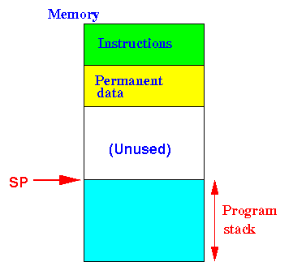
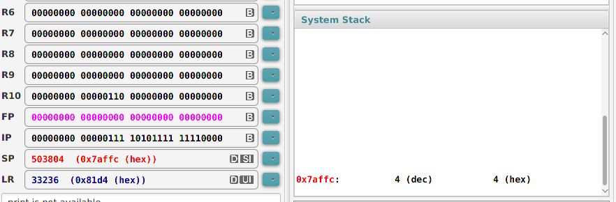

- Suppose the Program Stack is
as follows
before we
push a new value:
 The stack pointer SP points at the top of the program stack
All memory cells that lies below the memory location pointed to by SP are used (= reserved/allocated)
- The state the Program Stack
will be
like this
after we
push a new value
X:

The stack pointer will move up to indicate that the space is reserved (for the variable x).
-
For simplicity, we will
only store
int typed values on
the program stack
(The ARM processor can only push the value in a whole register (= 32 bits) on the stack.
If you push a data that consists of less than 32 bits, then you (as an assembler programmer) need to manage that yourself.
To avoid this tedious task, I will only push int typed (= 32 bits) on the stack....)
- Syntax:
push {regName} // Push the value in "regName" onto the program stackNote:
- The push instruction in
ARM can push
multiple registers
with a single push instruction,
but you must specify
the list of registers in a
specific order.
To minimize the amount of knowledge that you need to learn (in order to write assembler program), I will only show you how to push 1 register)
Example:
main: mov r0, #4 push {r0} // Push value in r0 on stack mov r0, #9 push {r0} // Push value in r0 on stackResult after the first push instruction (snapshot from EGTAPI's stack area)
 Notice that the stack pointer register SP (= 0x7affc) is pointing to the top of the program stack
Result after the second push instruction (snapshot from EGTAPI's stack area)

Notice that the stack pointer register SP (= 0x7aff8) is updated and still points to the top of the program stack
- The push instruction in
ARM can push
multiple registers
with a single push instruction,
but you must specify
the list of registers in a
specific order.
- Example Program:
(Demo above code)

- Prog file: /home/cs255001/demo/asm/8-sub/push.s
How to run the program:
- To compile: as255 push
- To run: use EGTAPI
- ARM (assembler) instruction to
pop an
int typed value
from the
(top of the) program stack:
pop {regName} // Pop the int typed value from the top // of the program stack and store it in register "regName"Example:
main: mov r0, #4 push {r0} mov r0, #9 push {r0} pop {r1} // r1 = 9 pop {r2} // r2 = 4
- Example Program:
(Demo above code)
- Prog file: /home/cs255001/demo/asm/8-sub/push.s
How to run the program:
- To compile: as255 push
- To run: use EGTAPI
- When memory used to
stored values of a
variable is
no longer needed,
the memory that was reserved for
the variable
must be de-allocated
(= un-reserved)
Suppose the following is the state of the Program Stack after we have reserved some memory for the variable x:
If we want to de-allocate the memory space used for variable x and discard the value in the de-alocated variable, the resulting stack will look like this:
In this example, we assume that the value in the variable x is no longer needed nor used in future computation.
I.e.: we discard the variable stored in the variable x
- If we only want to de-allocate some space on the syatem stack, there is a more efficient way to do this task (rather than using the pop instruction !)
- In order to de-allocate
the space used by
some variables that are stored
on the program stack,
we can simple
increase the stack pointer
(which will change the
stack top that
marks the boundary of the
reserved memory area !!!)
Example: to de-allocate one int typed variable from the (top of the) program stack, we use:
add sp, sp, #4 // Move program stacktop down 4 bytes // This will remove the reservation of 4 bytes // that was used to stored the int typed variableExample: to de-allocate two int typed variable from the (top of the) program stack, we use:
add sp, sp, #8 // Move program stacktop down 8 bytes // This will remove the reservation of 8 bytes // that was used to stored TWO int typed variable
- The stack pointer SP
has 2 important functions:
- SP indicate the
top of the
stack; as such:
- SP points to the location in the stack that the push and pop operations will operate
- Another function
of SP is:
- SP marks the memory locations that are reserved (= currently used !!!)
Specifically:
+----------+ | | | | AVAILABLE !!!! (not used) | | SP -->+----------+ | | ^ | | | USED !!!! | | | | Program | | (= reserved !!!!) | stack | | | | | | | v +----------+
- SP indicate the
top of the
stack; as such:
- Therefore:
- When you perform a push
operation (=
increase the stack size),
you will:
- create one or more variables (on the stack !!!)
- When you perform a pop
operation (=
decrease the stack size),
you will:
- destroy one or more variables (on the stack !!!)
- When you perform a push
operation (=
increase the stack size),
you will: